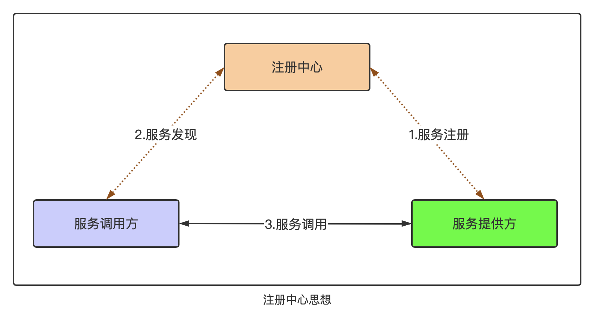
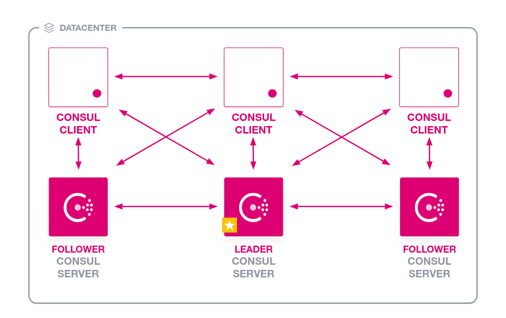
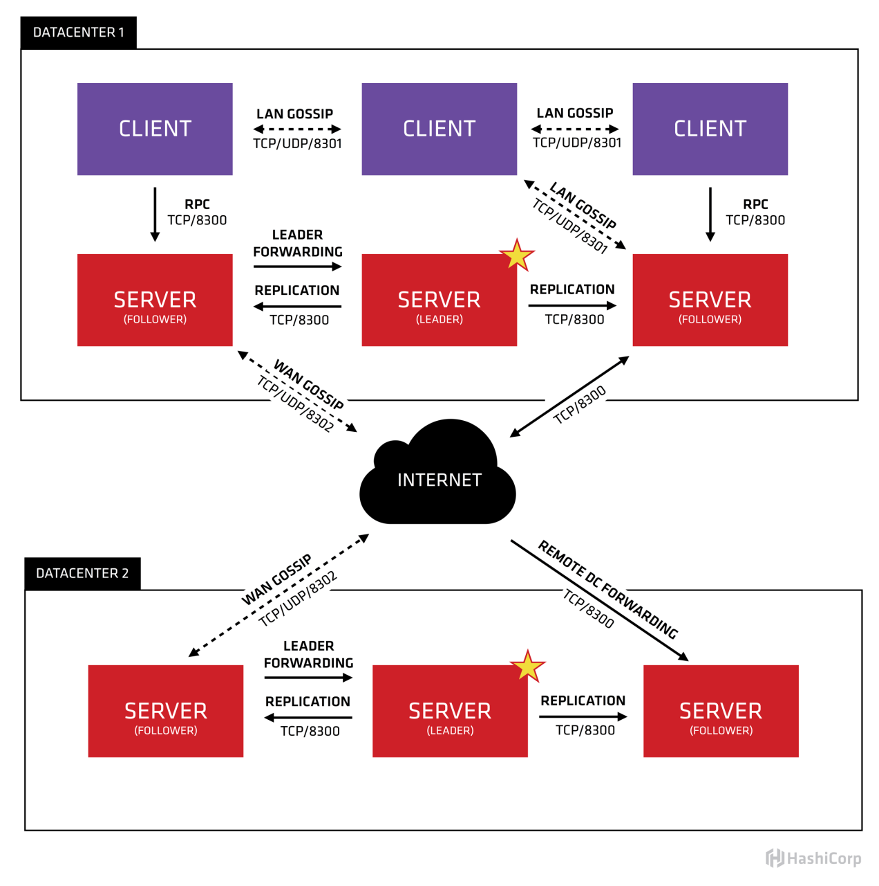

Consul是HashiCorp公司推出的开源工具，
Go语言开发,
用于实现分布式系统的服务发现与服务配置。
它有开源版和企业版
1、服务注册与发现、分布式、高可用、可横向扩展
2、内置KV存储，便于配置信息共享
3、支持健康检查，支持检测方式：http、脚本、tcp、ttl(类似于心跳检测)
4、使用 Raft 算法来保证一致性
5、支持多数据中心，内外网的服务采用不同的端口进行监听，确保高可用
6、支持 http 和 dns 协议接口
7、官方提供web管理界面（web ui），包括：服务、节点、键/值、ACL、intentions(意图)等管理
8、天生支持跨平台（可移植）：支持windows、linux（Ubuntu/Debian、CentOS/RHEL、Fedora、Amazon Linux 等）、Mac OS X、FreeBSD、Solaris



1、Linux下二进制方式安装
1）下载二进制包
xxxxxxxxxx11$ wget https://releases.hashicorp.com/consul/1.9.3/consul_1.9.3_linux_amd64.zip2）解压到/usr/local/bin
xxxxxxxxxx11$ unzip consul_1.9.3_linux_amd64.zip -d /usr/local/bin2、源码方式安装（使用go环境）
1）创建源码文件夹
xxxxxxxxxx11$ mkdir -p $GOPATH/src/github.com/hashicorp && cd $_2）使用git克隆源码
xxxxxxxxxx11$ git clone https://github.com/hashicorp/consul.git3）执行安装
xxxxxxxxxx31$ cd consul2$ make tools3$ make dev3、docker方式安装
1）拉取镜像
xxxxxxxxxx11$ docker pull consul2）安装并运行
xxxxxxxxxx11$ docker run -d -p 8500:8500 --restart=always --name=consul consul:latest agent -server -bootstrap -ui -node=1 -client='0.0.0.0'xxxxxxxxxx81agent: 表示启动 Agent 进程。2server：表示启动 Consul Server 模式3client：表示启动 Consul Cilent 模式4bootstrap：表示这个节点是 Server-Leader ，每个数据中心只能运行一台服务器。技术角度上讲 Leader 是通过 Raft 算法选举的，但是集群第一次启动时需要一个引导 Leader，在引导群集后，建议不要使用此标志。5ui：表示启动 Web UI 管理器，默认开放端口 8500，所以上面使用 Docker 命令把 8500 端口对外开放。6node：节点的名称，集群中必须是唯一的，默认是该节点的主机名。7client：consul服务侦听地址，这个地址提供HTTP、DNS、RPC等服务，默认是127.0.0.1所以不对外提供服务，如果你要对外提供服务改成0.0.0.08join：表示加入到某一个集群中去。 如：-json=192.168.0.11
consul是以agent方式来运行。
agent有两种节点模式: server和client
xxxxxxxxxx11$ consul agent -dev查看效果：curl http://192.168.1.109:8500
http://192.168.1.109:8500/ui/dc1/services
设置监听端口：
xxxxxxxxxx11$ consul agent -dev -client=0.0.0.0 -http-port=8901 -https-port=8902 -dns-port=8903 -grpc-port=8904 -server-port=8905xxxxxxxxxx31$ mkdir -p /data/service/consul/{web,data,conf,run}2
3$ consul agent -server -bind=192.168.1.109 -client=192.168.1.109 -data-dir=/data/service/consul/data -config-dir=/data/service/consul/conf -ui -enable-script-checks注意：仅一台机器时（即非集群情况下）该参数可有可无：-bootstrap-expect=1
部署在3台主机上，规划如下：
| 主机名 | IP | 部署服务 |
|---|---|---|
| node1 | 192.168.1.109 | server |
| node2 | 192.168.1.110 | client |
| node3 | 192.168.1.111 | client |
| node4 | 192.168.1.112 | client |
2、前置条件
3、分别在各个机器上拉取 consul 的Docker镜像
4、按照部署规划，分别启动
xxxxxxxxxx111# node12docker run -d -p 8500:8500 -v /data/server/consul1:/consul/data --name=consul1 consul agent -node=consul-1 -server -bootstrap -ui -client='0.0.0.0'3
4# node25docker run -d -p 8501:8500 -v /data/server/consul2:/consul/data --name=consul2 consul agent -node=consul-2 --server=true -bootstrap -ui --client=0.0.0.0 --join 192.168.1.1096
7# node38docker run -d -p 8502:8500 -v /data/server/consul3:/consul/data --name=consul3 consul agent -node=consul-3 --server=true -bootstrap -ui --client=0.0.0.0 --join 192.168.1.1099
10# node411docker run -d -p 8503:8500 -v /data/server/consul4:/consul/data --name=consul4 consul agent -node=consul-4 --server=true -bootstrap -ui --client=0.0.0.0 --join 192.168.1.1095、访问管理界面，通过浏览器打开以下任意地址均可
http://192.168.1.109:8500 或者 http://192.168.1.110:8501 或者 http://192.168.1.111:8502 或者 http://192.168.1.112:8503
xxxxxxxxxx11$ vim /usr/local/etc/nginx/conf.d/consul.confxxxxxxxxxx91server {2 listen 80;3 server_name localhost.dev-consul.com;4 access_log /data1/logs/nginx/consul.access.log main;5 error_log /data1/logs/nginx/consul.error.log;6 location / {7 proxy_pass http://192.168.1.109:8500;8 }9}
支持两种注册方式：
xxxxxxxxxx11$ vim /data/service/consul/conf/order_api.jsonxxxxxxxxxx71{2 "service": {3 "name": "order-api", // 服务名4 "tags": ["dev-order-api"], // tag名5 "address": "http://localhost.dev-order-api.com","port": 9888 // 服务监听的端口6 }7}该方式启动consul时需要执行参数： -config-dir=/data/service/consul/conf
使配置生效示例：
xxxxxxxxxx51$ consul agent -server -ui -bind=192.168.1.109 -client=0.0.0.0 -data-dir=/data/service/consul/data -config-dir=/data/service/consul/conf2
3$ consul reload -http-addr=http://192.168.1.109:85004
5$ consul services register -name=order-api -http-addr=http://192.168.1.109:85002、在consul启动之后，通过HTTP API动态添加
xxxxxxxxxx91curl -X PUT 'http://192.168.1.109:8500/v1/agent/service/register?pretty=' \2-H 'cache-control: no-cache' \3-H 'content-type: application/json' \4-d '{5 "name": "order-api",6 "tags": ["php" ,"dev-order-api"],7 "address":"http://localhost.dev-order-api.com",8 "port": 98889}'加上健康检查
xxxxxxxxxx151curl -X PUT 'http://192.168.1.109:8500/v1/agent/service/register?pretty=' \2-H 'cache-control: no-cache' \3-H 'content-type: application/json' \4-d '{5 "name": "order-api",6 "tags": ["php" ,"dev-order-api"],7 "address":"http://localhost.dev-order-api.com",8 "port": 9888,9 "check": {10 "name": "checkorderapi",11 "args": ["curl", "http://localhost.dev-order-api.com/index/health"],12 "interval": "10s",13 "timeout": "20s"14 }15}'
consul对服务发现提供两种方式:
1）获取服务列表：
方式1 - http api：curl http://192.168.1.109:8500/v1/agent/services
方式2 - 命令行：consul catalog services -http-addr=http://192.168.1.109:8500
2）获取单个服务信息：
格式：curl http://192.168.1.109:8500/v1/catalog/service/服务名
示例：curl http://192.168.1.109:8500/v1/catalog/service/order-api
dns格式：
服务名.service.consul
tag名.服务名.service.consul
dns示例：
dig @192.168.1.109 -p 8500 order-api.service.consul
dig @192.168.1.109 -p 8500 dev-order-api.order-api.service.consul
格式：curl -X PUT http://consul地址/v1/agent/service/deregister/服务id
示例：curl -X PUT http://192.168.1.109:8500/v1/agent/service/deregister/order-api
格式：consul services deregister -id=服务id -http-addr=consul接口地址
示例：consul services deregister -id=mobile-api -http-addr=http://192.168.1.109:8500
xxxxxxxxxx321package main2
3import (4 "fmt"5
6 consulapi "github.com/hashicorp/consul/api"7)8
9func main() {10 // 1、consul配置11 cfg := consulapi.DefaultConfig()12
13 // 2、通过配置获取consul client客户端对象，返回api.Client结构体对象14 consulClient, err := consulapi.NewClient(cfg)15 if err != nil {16 fmt.Println(err.Error())17 return18 }19 // 3、注册服务20 // 设置待注册的服务信息21 regObj := consulapi.AgentServiceRegistration{22 Name: "order-api",23 Address: "127.0.0.1",24 Port: 8080,25 }26 regObj.Tags = []string{"order-api", "订单服务"}27 if err := consulClient.Agent().ServiceRegister(®Obj); err == nil { // 注册服务28 fmt.Println("注册成功")29 } else {30 fmt.Println(err.Error())31 }32}xxxxxxxxxx371package main2
3import (4 "fmt"5
6 consulapi "github.com/hashicorp/consul/api"7)8
9func main() {10 // 1、consul配置11 cfg := consulapi.DefaultConfig()12
13 // 2、通过配置获取consul client客户端对象，返回api.Client结构体对象14 consulClient, err := consulapi.NewClient(cfg)15 if err != nil {16 fmt.Println(err.Error())17 return18 }19 20 // 初始化kv21 kv := consulClient.KV()22 23 // 提交一个kv对24 p := &consulapi.KVPair{Key: "MYSQL_HOST", Value: []byte("localhost")}25 _, err = kv.Put(p, nil)26 if err != nil {27 panic(err)28 }29 30 // 查看kv31 pair, _, err := kv.Get("MYSQL_HOST", nil)32 if err != nil {33 panic(err)34 }35 36 fmt.Printf("KV: %v %s\n", pair.Key, pair.Value)37}